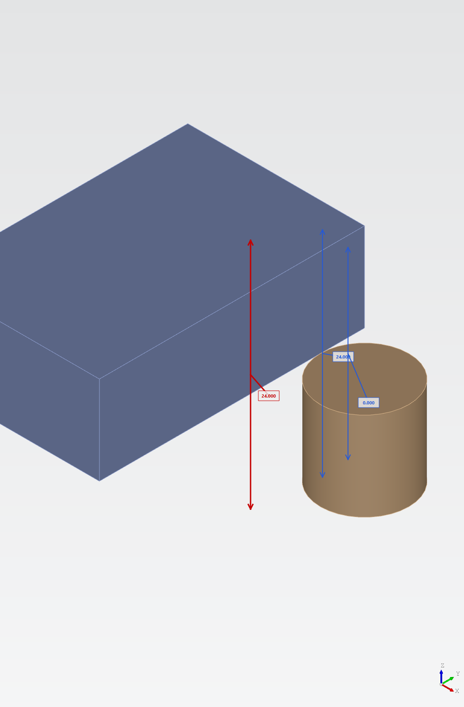

Tolerance Stackup Report
Caster tolerance study
Summary of 1D Tolerance Stackups
1Objectives met
0Objectives not met
9.49 / 5.01Predicted / Target Sigma rollup
| OK | Name | Nominal | Objective | Target Quality | Results | Predicted Quality | #Dims |
|---|---|---|---|---|---|---|---|
| WARN | Bushing ID alignment | 24 | +0.750/-0.500 | Cpk = 1.67 | +0.158/-0.112 | Cpk = 3.16 | 2 |
Bushing ID alignment
WARN
+0.750/-0.500
Cpk = 1.67
Stackup Table
| Name | Sens | Nominal | Tolerance | Datum |
|---|---|---|---|---|
| Bracket | ||||
| Bracket datum face | 0 | +0.150/-0.100 | A | |
| Bracket to bushing face | +1 | 24 | +0.150/-0.100 | A |
| Bushing | ||||
| Bushing ID axis | 0 | (dia 25.00) | [↗ Runout | ⌀0.1 | A] | A |
| Manual runout to datum A | +1 | 0 | [↗ Runout | ⌀0.1 | A] | A |
| Bushing ID alignment | 24 | +0.158/-0.112 | ||
| Objectives | +0.750/-0.500 |
Bushing ID alignment Analysis Results
Statistical Results for Bushing ID alignment
Mean: 24.00
Standard Deviation: 0.05
Results: +/-0.264
Objective: +0.750/-0.500
Cpk = 3.16
Cp = 3.95
Cpk = 3.16
Sigma = 9.49
Yield = 100.00%
At target quality: Results +/-0.264
At objective: Cpk = 3.16
- Result lower23.736
- Result upper24.264
- Lower objective23.500
- Upper objective24.750
- Mean24.000
Calculated results are ignoring potentially significant 3D effects
- Endpoint features are laterally offset from the stack direction.
Bushing ID alignment Analysis Contributions
Bracket to bushing face
+0.150/-0.100 A
90.0%
Manual runout to datum A
[↗ Runout | ⌀0.1 | A]
10.0%